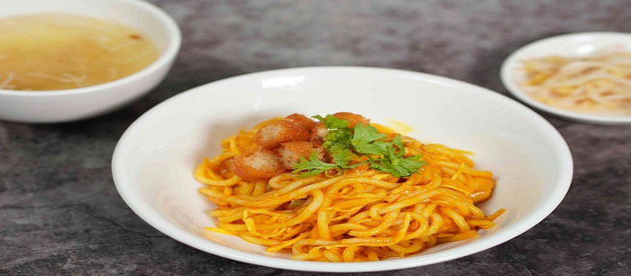
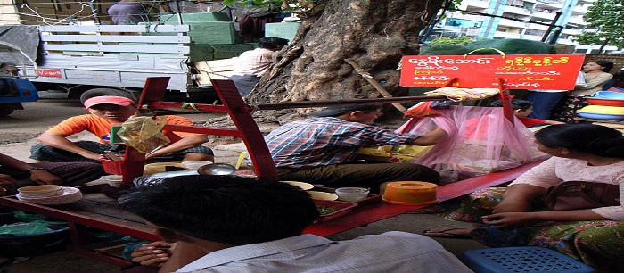
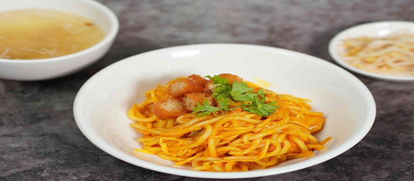
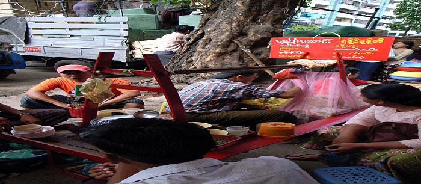

Mont di is a collective term for Burmese dishes made with thin rice noodles. The vermicelli is used fresh, as it ferments quickly in Myanmar's tropical climate. There are a number of mont di dishes, and the Rakhine mont di of the Arakanese from western Myanmar is the most popular. Mandalay mont di is another well-known dish. A handful of regional rice vermicelli dishes, such as Mawlamyaing mohinga and Kengtung khao sen, are also interchangeably called "mont di."
All the variants of mont di are often accompanied by Burmese fritters, of one's choice.
Rakhine mont di is the most popular dish, closely associated with the Rakhine people. It is a semi-staple dish of Rakhine State. It comes in two forms: salad or soup.
The soup is the more common version, in which rice vermicelli is mixed with a thin soup made of daggertooth pike conger, called thinbaw htoe in Arakanese, nga shwe in Burmese), Rakhine ngapi and lemongrass. Dry roasted pike conger eel flakes, fried onion and garlic, fresh coriander, red and green chili paste are added. It is also called arpu sharpu, due to the green chili paste. Some add fried pulverised nga phe and pork rind.
In the dry salad form, the same ingredients are mixed into a colourful combination. The green chili paste gives the white rice vermicelli a slight greenish hue.
Mandalay mont di, also called nan gyi thoke, is quite different from Rakhine mont di. It uses meat instead of marine fish, as Mandalay is an inland city located in Central Myanmar. The noodles used are thick round rice noodles called nan gyi. The meat is cooked as a sauce and added to the noodles like a salad (in some recipes only). Many authentic shops uses a variation of chickpea flour and its different flavoured oils to bring about its unique Mandalay flavours. Most mont di shops will prepare the dish based on the customers' preferences for specific tastes and offers the option of "mixing" (tossing) it for the customer.
Dawei mont di, also known as Dawei mont let thoke, is a specialty of Dawei in Southern Myanmar.The dish consists of threadfin fish or catfish boiled in fermented toddy palm juice and coconut milk, served with rice vermicelli, and garnished with hand-crushed murukku.
Khotaung mont di is a well-known Burmese noodle salad originating from the small village of Khotaung in Sagaing Region.The salad uses thick rice noodles (also used in nan gyi thoke) and fish balls, mixed with chopped cabbage, green beans, pickled radish, chickpea flour, garlic oil, with optional toppings, including Burmese fritters, jengkol, and fish cake.The dish is typically accompanied with a light broth made from fish balls and fish head.The origins of the dish date to the Konbaung dynasty. One of Mindon Min's pregnant queens once had a craving for worms.Khotaung villagers, in response, dressed thick rice noodles with garlic oil, which eventually became Khotaung mont di.
Taungoo mont di is a specialty from the town of Taungoo. It is a rice vermicelli salad served with a thin mohinga broth, raw tomatoes and green beans, Burmese chickpea fritters, and fried garlic.
Yangon mont di is very similar to the Rakhine mont di. The only difference is that oil is added to the salad, reflecting the Burmese preference for oiliness.
During the 1700s, the influx of Ayutthayans following the Burmese�Siamese wars to Mandalay also created an infusion Central Thai-inspired dishes, one of which is known as Yodaya mont di. The rice noodle dish uses fish as the main protein instead of chicken, and is prepared using slivers of curled rice vermicelli strands (khanom chin) tossed in a turmeric-infused oil, and served with fried onions and raw green beans.A unique rendition of Yodaya mont di, served with bean flour, dried shrimps, and a thicker gravy, can be found in Mandalay's Minthazu ward.
 


